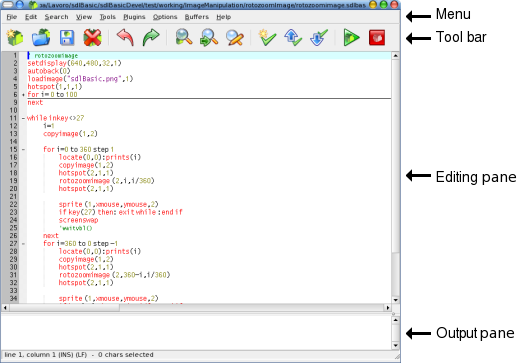

Interface
sdlBasic now have its own dedicated editor provided with the
interpreter. Naturally you can continue to use your preferred text
editor if you wish. sdlBasic editor (sdlBasic on Linux or sdlBasic.exe
on windows) derive from the good and well known SciTE text editor ( http://scintilla.sourceforge.net/ ) and share with him most of the powerful features.
SciTe was chosen because several reasons:
- it's a good text editor with many useful features such as text folding, syntax highlight, etc...
- it run on several platforms as sdlBasic does;
- it's free software and it's sources are available to be modified and freely distributed.
Here below is shown how sdlBasic Editor looks

It consists in:
- Menu where you will find all the commands;
- Tool bar allowing a fast shortcut to mostly used commands;
- Editing pane that is where you will write your sdlBasic programs;
- Output pane that receive and show console output such as error messages.